Activity: Creating an adjustable part
Overview
-
The objective of this activity is to show how to create an adjustable part to be used in an assembly.
In this activity you will create a spring that adjusts its length when placed in an assembly.
Click here to download the activity file.
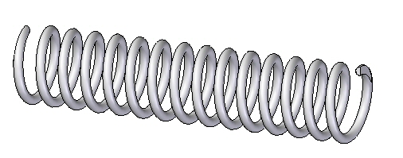
Sketches created in a part document will be used to define the adjustable variable.
Choose File tab→Open tab→Open  , and then locate and open spring.par in the folder where the activity files are located.
, and then locate and open spring.par in the folder where the activity files are located.
Select Sketch1 in PathFinder and then select Edit Profile
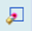
to edit the sketch.This sketch will be used to create a helix defining the spring. To make the length adjustable, a dimension controlling the length will be defined.
Dimension the horizontal line in the sketch and set the length to 2000 mm as shown below.
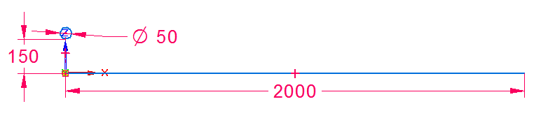
Click Tools, then click Variables to show the Variable Table.
Find the variable with the length equal to 2000 and change the name of the variable to spring_length.
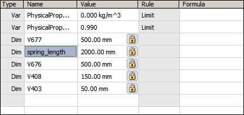
Dismiss the Variable Table.
Click the Home tab, then click Close Sketch.
Click Finish.
Choose the Home→Planes→Parallel Plane command .
Select the Right (yz) plane to copy. Copy to the endpoint of the sketch shown.
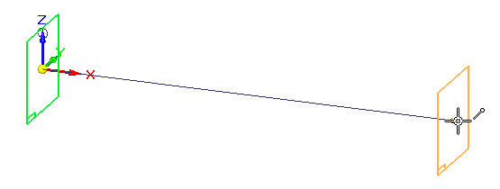
These two planes will be used to define the extent of the spring.
Create the helix from the sketch1.
Choose the Home→Solids→Add Helix command.
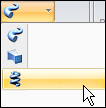
Set the create from option to: Select from Sketch .
Select the circle as the Sketch Chain and then click Accept.
Select the horizontal line as the Axis of Revolution.
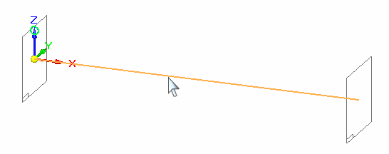
Select the left side of the line as the origin of the axis.
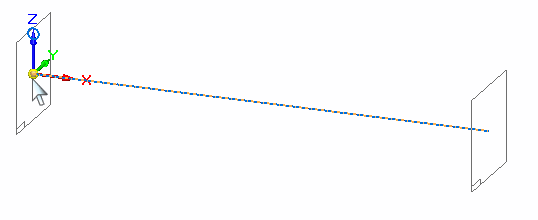
Set the Helix Method to Axis length & Turns and the number of turns to 15.
Click Next.
Click the From/To Extent
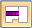
.Select each of the reference planes to define the extent.
The helix is shown.
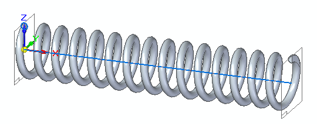
Click Finish.
Hide Sketch1.
The variable defining the axis length of the spring will be defined as the adjustable variable.
Choose the Tools→Assistants→Adjustable Part command .
Click the Variable Table button.
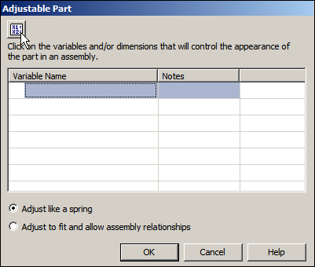
Select spring_length as the adjustable variable.
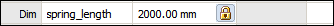
Dismiss the Variable Table. Spring_length will be defined as the adjustable variable.
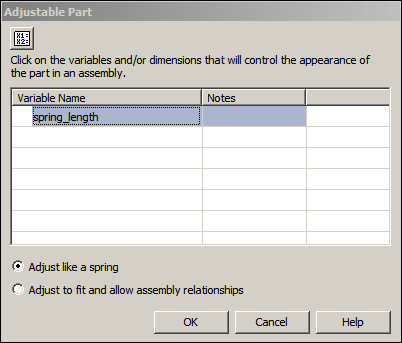
Click OK.
The spring is complete. Save and close the document.
The spring will be placed and positioned in the assembly as an adjustable part.
Open the assembly shock_absorber.asm.
In PathFinder, right click shock_absorber.asm and then click Activate to activate all the parts.
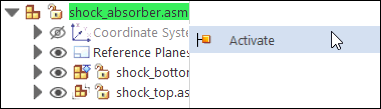
In the subassembly, shock_top.asm, examine the relationships used to position the subassembly relative to shock_bottom.asm.
In PathFinder, click shock_top.asm. In the lower pane notice that there is an Axial Align relationship and a floating Planar Align relationship.
These relationships keep the cylindrical parts aligned and keep the holes containing the bushing and sleeve parallel. There is still freedom to move along the axis of the cylinders.
From the Parts Library, drag spring.par into the assembly.
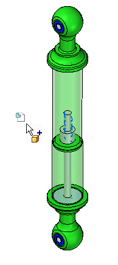
Set the placement choice as Place Adjustable, then click OK.
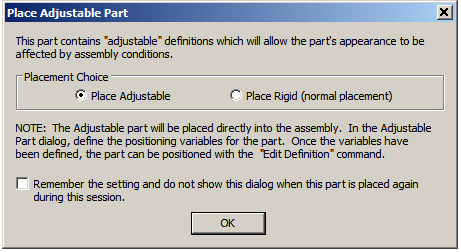
The adjustable variable in the spring will be controlled by the measured distance between two faces defined in the next steps.
Click Adjust Like a Spring and then click the Measure Distance button.
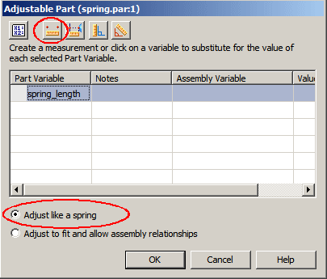
On the Measure Distance tool bar, set the element type to Keypoints.
Select the circular face shown for the point to measure from. The measurement tool will lock to the radial point of the circle when selected.
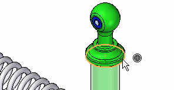
Select the circular face shown for the point to measure to. The measurement tool will lock to the radial point of the circle when selected.
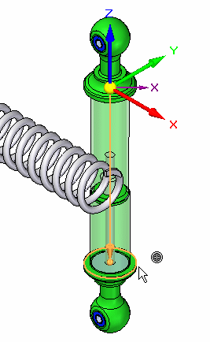
The adjustable distance has been set and the spring length adjusts to the distance defined.
Right-click spring.par in PathFinder. Click Show/Hide Component. Turn on the display of Reference Axes.
Choose the Axial Align command. On the Axial Align command bar, click Options. Turn on Linear Edges.
Select the center-line of the spring.
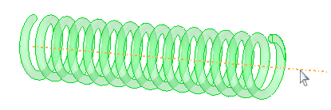
For the target axis, click the cylinder shown.
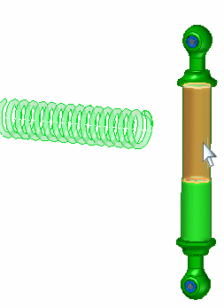
Using FlashFit select the face shown.
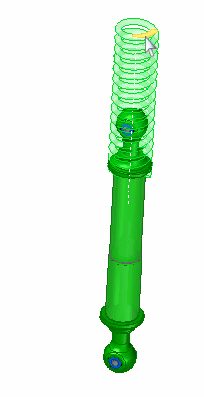
For the target face, click the face shown.
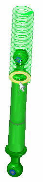
Using FlashFit, mate the opposite side of the spring to the flat face on the bottom of the shock absorber.
The spring is placed. Click the Select Tool and clear the selection.
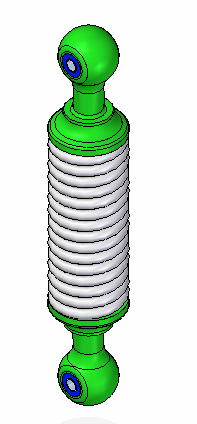
shock_top.asm is still free to move along the axis of the cylinders. You will move this part and the spring will adjust size based on the position of this subassembly.
Choose the Home→Modify→Drag Component command
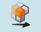
.Drag shock_top.asm to increase the separation distance between the subassemblies.
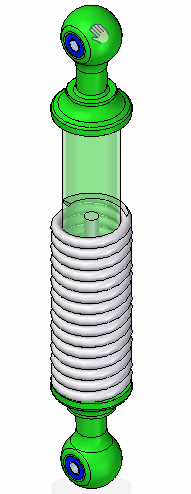
The spring will adjust to the spacing between the faces.
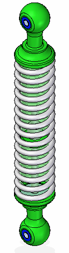
Use the Drag Component command to change the spacing and observe how the spring reacts.
Previously, the spring was set to adjust as a spring. The length of the spring was determined by the spacing between two faces on different parts. The adjustable part also be used to determine the spacing between the faces which removes the freedom to move and makes the assembly rigid. This will be demonstrated in the next steps.
Notice the icon in PathFinder for the subassembly shock_top.asm shows it as under constrained.
Click the Select Tool. In PathFinder, right click spring.par. Click Simplified/Adjustable. Click Rigid Part.
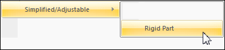
Now the spread distance is defined by the spring_length variable in spring.par. You will use peer variables to edit the value of this variable.
Choose the Tools→Variable→Peer Variables command. Select the spring and change the value of spring_length to 1540 mm.
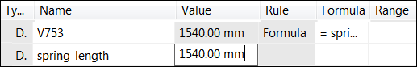
Close the variable table. Notice that shock_top.asm is now constrained and the variable defining spring length determines the offset value.
Save and close the document. This completes the activity.
In this activity you learned how to create and adjustable part and place it in an assembly as a spring, or to adjust the fit to allow assembly relationships.
-
Click the Close button in the upper-right corner of this activity window.
Answer the following questions:
-
Is the following statement true or false? When an adjustable part is placed in an assembly and adjusts to fit, the part document containing the part also adjusts to a specific size, as well as every occurrence of that part in the assembly and other assemblies that it may reside.
-
Fill in the blank in the following statement. When defining a part as adjustable, the adjustable value is defined by a ________.
-
Is the following statement true or false? After defining a part as adjustable, it is impossible to place the part as a rigid part.
-
What is the difference between the following placement options of an adjustable part?
-
Adjust like a spring
-
Adjust to fit and allow assembly relationships
-
-
Is the following statement true or false? When an adjustable part is placed in an assembly and adjusts to fit, the part document containing the part also adjusts as well as every occurrence of that part in the assembly and other assemblies that it may reside in.
The answer is false.
When you specify that a part is adjustable, the design body in the part model does not change when the assembly parameters change. An associative copy of the design body in the assembly changes. The associative copy of the design body is placed in the assembly automatically and is managed by Solid Edge when you specify that a part is adjustable within the context of the assembly.
This allows you to place several occurrences of an adjustable part into an assembly, and each occurrence of the adjustable part will conform to the current parameter values for that occurrence of the part. For example, one occurrence of a spring can be shown compressed while another occurrence of the spring can be shown uncompressed.

-
Fill in the blank in the following statement. When defining a part as adjustable, the adjustable value is defined by a variable. A dimension value has a variable associated with it which shows up in the variable table.
-
Is the following statement true or false? After defining a part as adjustable, it is impossible to place the part as a rigid part.
The answer is false.
The user has the option to place the part as either adjustable or rigid.
-
What is the difference between the following placement options of an adjustable part?
-
Adjust like a spring
-
Adjust to fit and allow assembly relationships
When using the adjust like a spring option, the variable length is controlled by the spacing between the components used to position the adjustable part. When using the adjust fit and allow assembly relationships option, the spacing between the other components is controlled by the size of the adjustable dimension in the adjustable part.
-